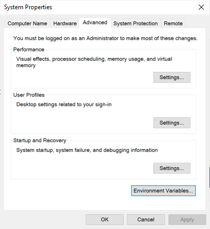
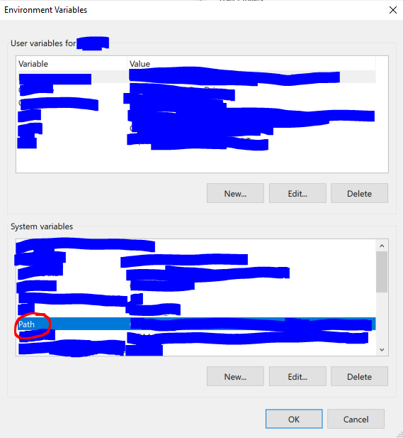
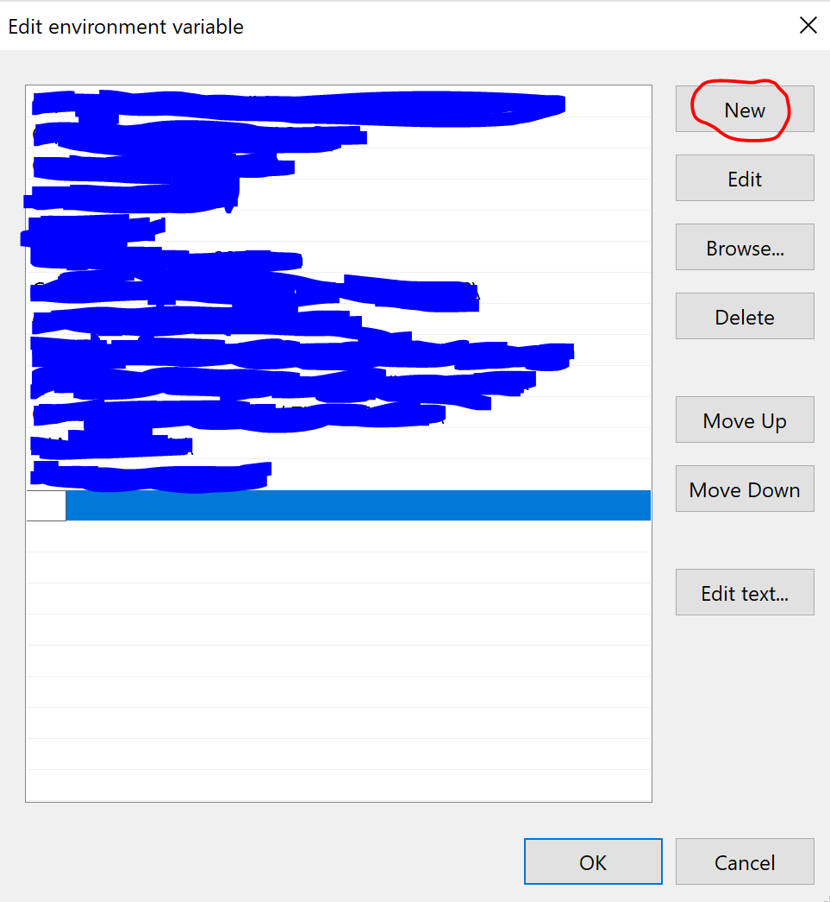
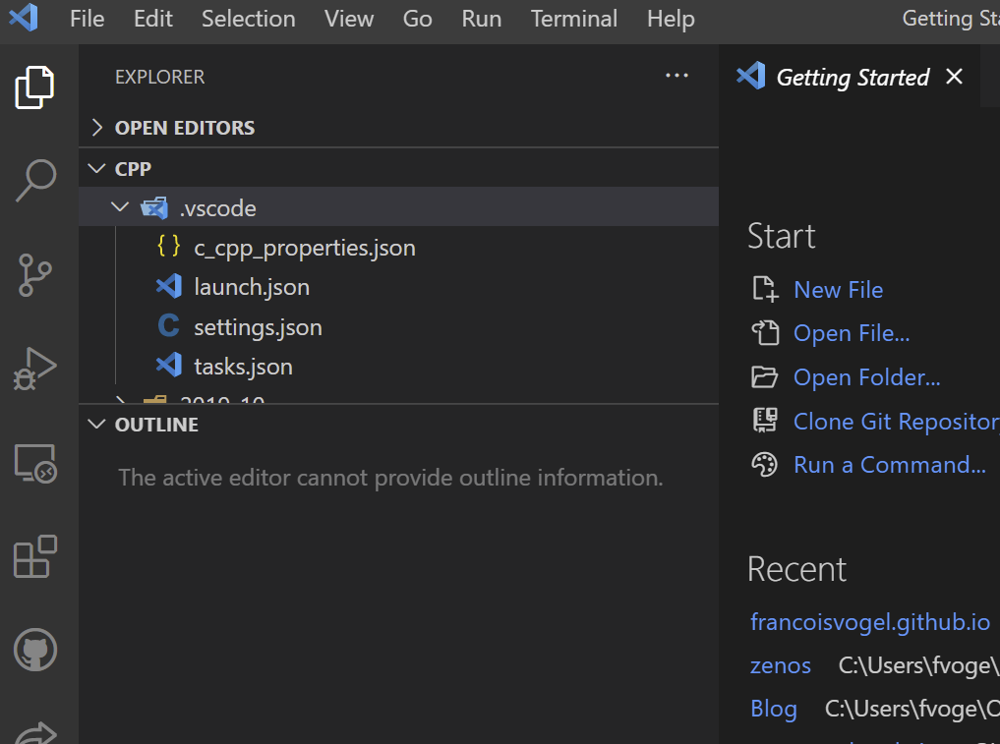
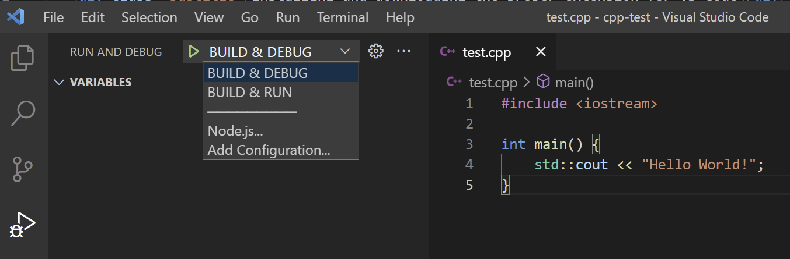

Using C++ with VS Code: Installation & Tips
By Francois Vogel on 06/09/2021
I've been using C++ with Visual Studio Code for several years now. I know that you may experience hard times installing and properly configuring their environment, so I decided to give you a detailed explanation for the installation, specifically for Windows 10 users.
Installing MinGW64
MinGW64 is a compiler system that namely provides C, C++ and Fortran compiler.
First, you need to download a zip file from GitHub, containing the compiler system:
github.com/GorvGoyl/MinGW64/releases
Note that you should download the following zipped folder:
MinGW64.zip
Now, extract the contents of the folder to:
C:\
(Just open the zipped folder in the File Explorer, and click on Extract All... ). Then you will be prompted your selected extraction folder, which should be C:\.)
Congratulations! You can now use g++ from the CMD. To check that it works, you can ask the installed version with the following command:
C:\MinGW64\bin\g++.exe --version
You should get something like:
g++.exe (x86_64-win32-seh-rev0, Built by MinGW-W64 project) 8.1.0
Copyright (C) 2018 Free Software Foundation, Inc.
This is free software; see the source for copying conditions. There is NO
warranty; not even for MERCHANTABILITY or FITNESS FOR A PARTICULAR PURPOSE.
Adding g++ to the environment variables
Now, to avoid having to type C:\MinGW64\bin\g++.exe every time you want to compile C++ code, you have to modify your system environment variables.
To do this, type "edit the system environment variables" in the Windows search bar.
Normally, a little window like the one below should show up.

Now, click on "Environment variables".
Under system variables, select Path and click on Edit... .

Now, click on "New".

In the newly created field enter:
C:\MinGW64\bin\
Great! You should now be able to use the g++ command from the CMD. To be sure that it works, type:
g++ --version
You should receive the same message as with the previous command.
Installing and downloading the proper extension for VS Code
Install VS Code from the official Microsoft website if you still haven't done it.
In VS Code, open the extensions tab (Ctrl+Shift+X by default).
Now you need to install an extension that will allow to use C++. It's simply called C/C++.
PROTIP: I recommend you install the C/C++ Extensions Pack, which regroups several popular extensions
You can check it out at the following link:
https://marketplace.visualstudio.com/items?itemName=ms-vscode.cpptools-extension-pack
Configuring VS Code
Open a folder in VS Code (typically Ctrl+O). Create a folder called .vscode It will be used for configuration.

You have to create a file to create debugging options called launch.json :
{
"version": "0.2.0",
"configurations": [
{
"name": "BUILD & DEBUG",
"type": "cppdbg",
"request": "launch",
"program":
"${fileDirname}\\${fileBasenameNoExtension}.exe",
"args": [],
"stopAtEntry": false,
"cwd": "${workspaceFolder}",
"environment": [],
"externalConsole": true,
// SET TO FALSE IF YOU WANT INTERNAL OUTPUT
"MIMode": "gdb",
"miDebuggerPath": "C:\\MinGW64\\bin\\gdb.exe",
"setupCommands": [
{
"description": "Enable pretty-printing for gdb",
"text": "-enable-pretty-printing",
"ignoreFailures": true
}
],
"preLaunchTask": "g++.exe build active file"
},
{
"name": "BUILD & RUN",
"type": "cppdbg",
"request": "launch",
"program":
"${fileDirname}\\${fileBasenameNoExtension}.exe",
"args": [],
"stopAtEntry": false,
"cwd": "${workspaceFolder}",
"environment": [],
"externalConsole": true,
// SET TO FALSE IF YOU WANT INTERNAL OUTPUT
"MIMode": "gdb",
"miDebuggerPath": "C:\\MinGW64\\bin\\gdb.exe",
"setupCommands": [
{
"description": "Enable pretty-printing for gdb",
"text": "-enable-pretty-printing",
"ignoreFailures": true
}
],
"preLaunchTask": "g++ build & run active file"
}
]
}
You also need to create a file to reference the tasks described in the launch.json file, called tasks.json:
{
"tasks": [
{
"type": "shell",
"label": "g++.exe build active file",
"command": "C:\\MinGW64\\bin\\g++.exe",
"args": [
"-g",
"${file}",
"-o",
"${fileDirname}\\${fileBasenameNoExtension}.exe"
],
"options": {
"cwd": "C:\\MinGW64\\bin"
}
},
{
"type": "shell",
"label": "g++ build & run active file",
"command": "C:\\MinGW64\\bin\\g++.exe",
"args": [
"${file}",
"-o",
"${fileDirname}\\${fileBasenameNoExtension}.exe"
],
"options": {
"cwd": "C:\\MinGW64\\bin"
}
}
],
"version": "2.0.0"
}
As mentioned in the following article, if you want (or not) to see the output in the external console, modify the value of externalConsole.
https://gourav.io/blog/setup-vscode-to-run-debug-c-cpp-code
I also have a settings.json file, which is useful to store file associations:
{
"files.associations": {
"*.json": "c",
"iostream": "cpp",
"vector": "cpp",
"ostream": "cpp",
"random": "cpp",
"*.tcc": "cpp",
"fstream": "cpp",
"deque": "cpp",
"list": "cpp",
"string": "cpp",
"unordered_map": "cpp",
"iosfwd": "cpp",
"map": "cpp",
"new": "cpp",
"array": "cpp",
"atomic": "cpp",
"bitset": "cpp",
"cctype": "cpp",
"cfenv": "cpp",
"chrono": "cpp",
"cinttypes": "cpp",
"clocale": "cpp",
"cmath": "cpp",
"codecvt": "cpp",
"complex": "cpp",
"condition_variable": "cpp",
"csetjmp": "cpp",
"csignal": "cpp",
"cstdarg": "cpp",
"cstddef": "cpp",
"cstdint": "cpp",
"cstdio": "cpp",
"cstdlib": "cpp",
"cstring": "cpp",
"ctime": "cpp",
"cuchar": "cpp",
"cwchar": "cpp",
"cwctype": "cpp",
"forward_list": "cpp",
"unordered_set": "cpp",
"exception": "cpp",
"algorithm": "cpp",
"functional": "cpp",
"iterator": "cpp",
"memory": "cpp",
"memory_resource": "cpp",
"numeric": "cpp",
"ratio": "cpp",
"regex": "cpp",
"set": "cpp",
"string_view": "cpp",
"system_error": "cpp",
"tuple": "cpp",
"type_traits": "cpp",
"utility": "cpp",
"future": "cpp",
"initializer_list": "cpp",
"iomanip": "cpp",
"istream": "cpp",
"limits": "cpp",
"mutex": "cpp",
"scoped_allocator": "cpp",
"shared_mutex": "cpp",
"sstream": "cpp",
"stdexcept": "cpp",
"streambuf": "cpp",
"thread": "cpp",
"typeindex": "cpp",
"typeinfo": "cpp",
"valarray": "cpp",
"optional": "cpp",
"charconv": "cpp",
"queue": "cpp",
"cassert": "cpp",
"cerrno": "cpp",
"cfloat": "cpp",
"ciso646": "cpp",
"climits": "cpp",
"stack": "cpp",
"ccomplex": "cpp",
"cstdalign": "cpp",
"cstdbool": "cpp",
"ctgmath": "cpp",
"filesystem": "cpp",
"ios": "cpp",
"locale": "cpp"
},
"C_Cpp.default.includePath": [
"C:/MinGW64/**"
],
"C_Cpp.default.intelliSenseMode": "clang-x86",
"cmake.configureOnOpen": true
}
Finally, the c_cpp_properties.json file is necessary. It allows you to specify the includePath which is used to determine where the linter "crawls" when it detects #include statements. Here's my code:
{
"configurations": [
{
"name": "Win32",
"includePath": [
"${workspaceFolder}/**",
"C:\\MinGW64\\**"
],
"defines": [
"_DEBUG",
"UNICODE",
"_UNICODE"
],
"windowsSdkVersion": "10.0.18362.0",
"compilerPath":
"C:\\MinGW64\\bin\\g++.exe",
"cStandard": "c11",
"cppStandard": "c++17",
"intelliSenseMode": "gcc-x86"
}
],
"version": 4
}
PROTIP: Use the cppStandard setting to change your C++ standard (here it's set to c++17)
If you want to know more about C++ history, I recommend you go check out the following article from GeeksforGeeks:
www.geeksforgeeks.org/history-of-c/
Debugging
When you go in the debugging tab (usually Ctrl+Shift+D), you should now have two options:

If you just want to run the the current file, select BUILD & RUN.
If you need to debug, select BUILD & DEBUG.
Using C++ with VS Code on a daily basis
If you notice there are any problems or you have suggestions, don't hesitate to contact me in the Contact tab.
I hope this tutorial was useful and helped you boost your productivity!